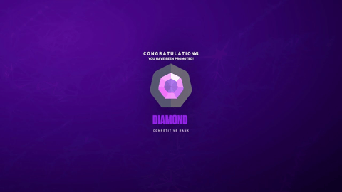

Rank
rank diamond adalah rank ke 6 dari total 8 rank Valorant, rank valorant terdiri dari 25 sub rank yang akan selalu di reset setiap act, sistem valorant menggunakan episode yang terdiri dari 3 act
rank diamond adalah rank ke 6 dari total 8 rank Valorant, rank valorant terdiri dari 25 sub rank yang akan selalu di reset setiap act, sistem valorant menggunakan episode yang terdiri dari 3 act
Berikut adalah vandal, ini adalah salah satu senjata favorit yang saya gunakan, vandal sangat membantu dalam 1-tapping musuh dan instakill
Phantom adalah senjata favorit saya setelah vandal, phantom memiliki keuntungan dalam rate fire dan recoil yang lebih bersahabat dari vandal, kekurangan phantom adalah damage yang berubah sesuai jarak tembak.
Fade adalah agent utama saya, role fade adalah initiator yang bertugas mencari info dan membuka war tim, fade adalah salah satu agent yang mudah digunakan dan berguna besar dalam tim jika bisa menggunakan skillnya dengan baik

Killjoy adalah agent dengan role sentinel yang bertugas untuk menjaga site agar tidak mudah ditembus oleh tim lawan, skill killjoy berguna untuk memperlambat tim musuh menyerang dan memasuki site